A Tour of Machine Learning Algorithms
Posted on Sat 04 January 2025 in misc
We will take a tour of a selection of popular and powerful machine learning algorithms that are commonly used in academia as well as in industry.
In practice, it is always recommended that you compare the performance of at least a handful of different learning algorithms to select the best model for the particular problem; these may differ in the number of features or examples, the amount of noise in a dataset, and whether the classes are linearly separable.
Eventually, the performance of a classifier—computational performance as well as predictive power—depends heavily on the underlying data that is available for learning. The five main steps that are involved in training a supervised machine learning algorithm can be summarized as follows:
- Selecting features and collecting labeled training examples
- Choosing a performance metric
- Choosing a learning algorithm and training a model
- Evaluating the performance of the model
- Changing the settings of the algorithm and tuning the model.
Artificial neurons
McCulloch and Pitts described such a nerve cell as a simple logic gate with binary outputs; multiple signals arrive at the dendrites, they are then integrated into the cell body, and, if the accumulated signal exceeds a certain threshold, an output signal is generated that will be passed on by the axon. Only a few years later, Frank Rosenblatt published the first concept of the perceptron learning rule based on the MCP neuron model. Only a few years later, Frank Rosenblatt published the first concept of the perceptron learning rule based on the MCP neuron model.
The formal definition of an artificial neuron More formally, we can put the idea behind artificial neurons into the context of a binary classification task with two classes: 0 and 1. We can then define a decision function, , that takes a linear combination of certain input values, x, and a corresponding weight vector, w, where z is the so-called net input z = w1x1 + w2x2 + ... + wmxm
Now, if the net input of a particular example, x(i), is greater than a defined threshold, , we predict class 1, and class 0 otherwise. In the perceptron algorithm, the decision function, is a variant of a unit step function. 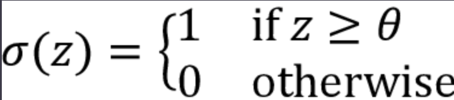
To simplify the code implementation later, we can modify this setup via a couple of steps. First, we move the threshold, , to the left side of the equation:
Second, we define a so-called bias unit as -\$\theta$ and make it part of the net input:
z = w1x1 + ... + wmxm + b = wTx + b
Third, given the introduction of the bias unit and the redefinition of the net input z above, we can redefine the decision function as follows:
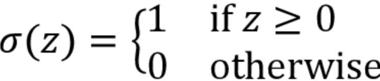
The Perceptron Learning Rule
The whole idea behind the MCP neuron and Rosenblatt’s thresholded perceptron model is to use a reductionist approach to mimic how a single neuron in the brain works: it either fires or it doesn’t. Thus, Rosenblatt’s classic perceptron rule is fairly simple, and the perceptron algorithm can be summarized by the following steps:
- Initialize the weights and bias unit to 0 or small random numbers
- For each training example, x(i): Compute the output value, y^(i) Update the weights and bias unit
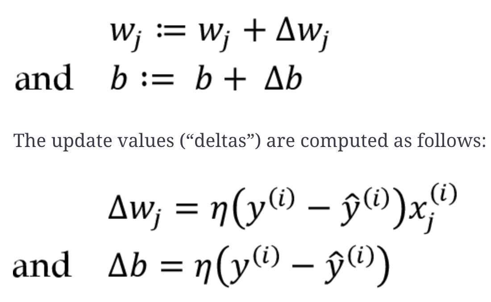
Note that unlike the bias unit, each weight, wj, corresponds to a feature, xj, in the dataset, which is involved in determining the update value defined above. Furthermore, is the learning rate (typically a constant between 0.0 and 1.0), $` \begin{aligned} \Delta w_1 & =\eta\left(y^{(i)}-\operatorname{output}^{(i)}\right) x_1^{(i)} ; \ \Delta w_2 & =\eta\left(y^{(i)}-\operatorname{output}^{(i)}\right) x_2^{(i)} ; \ \Delta b & =\eta\left(y^{(i)}-\operatorname{output}^{(i)}\right) \end{aligned} `$ It is important to note that the convergence of the perceptron is only guaranteed if the two classes are linearly separable, which means that the two classes can be perfectly separated by a linear decision boundary. If the two classes can’t be separated by a linear decision boundary, we can set a maximum number of passes over the training dataset (epochs) and/or a threshold for the number of tolerated misclassifications—the perceptron would never stop updating the weights otherwise.
The Adaline algorithm is particularly interesting because it illustrates the key concepts of defining and minimizing continuous loss functions. This lays the groundwork for understanding other machine learning algorithms for classification, such as logistic regression, support vector machines, and multilayer neural networks, as well as linear regression models, which we will discuss in future chapters.
The key difference between the Adaline rule (also known as the Widrow-Hoff rule) and Rosenblatt’s perceptron is that the weights are updated based on a linear activation function rather than a unit step function like in the perceptron. In Adaline, this linear activation function,\sigma(z) , is simply the identity function of the net input, so that \sigma(z)=z.
While the linear activation function is used for learning the weights, we still use a threshold function to make the final prediction, which is similar to the unit step function that we covered earlier. 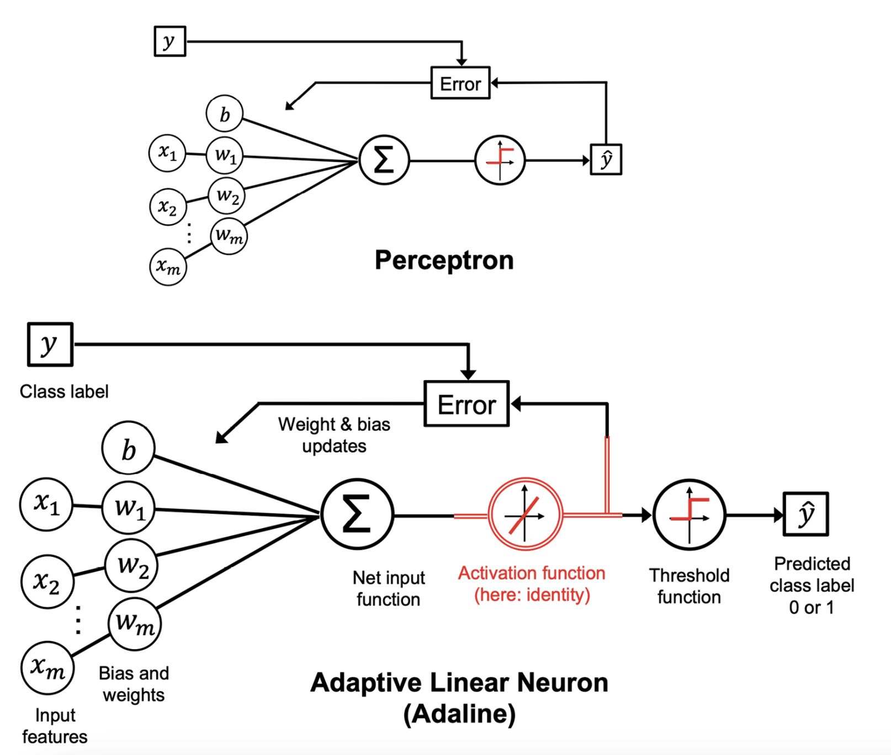
the Adaline algorithm compares the true class labels with the linear activation function’s continuous valued output to compute the model error and update the weights. In contrast, the perceptron compares the true class labels to the predicted class labels.
Minimizing loss functions with gradient descent
One of the key ingredients of supervised machine learning algorithms is a defined objective function that is to be optimized during the learning process. This objective function is often a loss or cost function that we want to minimize. In the case of Adaline, we can define the loss function, L, to learn the model parameters as the mean squared error (MSE) between the calculated outcome and the true class label.
The main advantage of this continuous linear activation function, in contrast to the unit step function, is that the loss function becomes differentiable. Another nice property of this loss function is that it is convex; thus, we can use a very simple yet powerful optimization algorithm called gradient descent to find the weights that minimize our loss function to classify the examples.
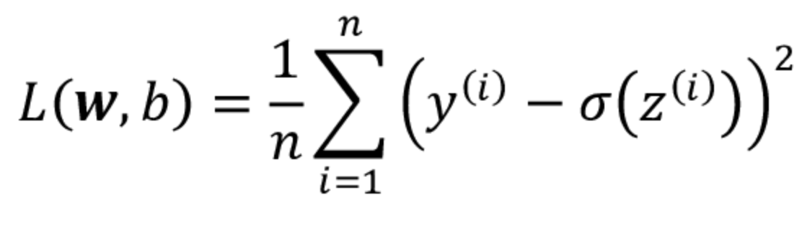
we can describe the main idea behind gradient descent as climbing down a hill until a local or global loss minimum is reached. In each iteration, we take a step in the opposite direction of the gradient, where the step size is determined by the value of the learning rate, as well as the slope of the gradient (for simplicity, the following figure visualizes this only for a single weight, w):
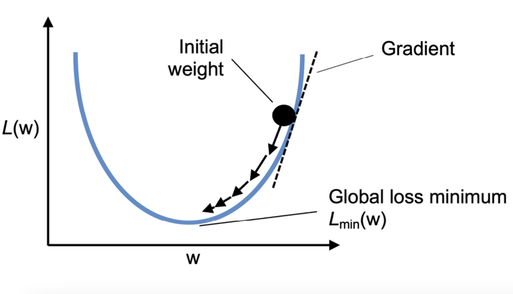
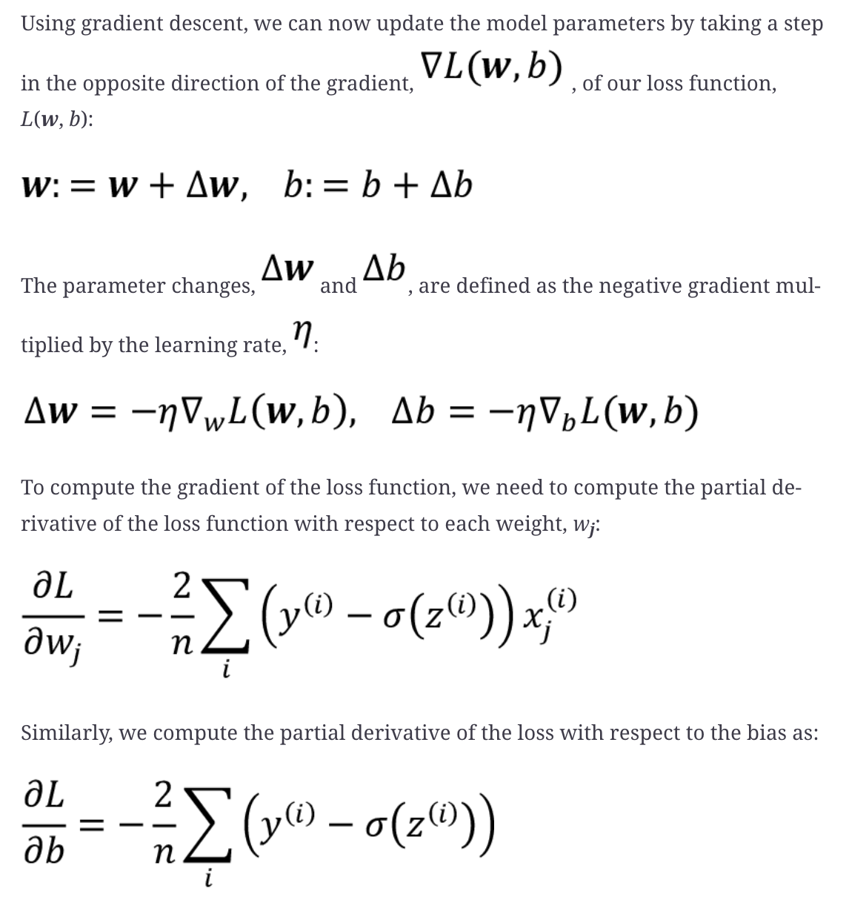
Furthermore, the weight update is calculated based on all examples in the training dataset (instead of updating the parameters incrementally after each training example), which is why this approach is also referred to as batch gradient descent.
Improving gradient descent through feature scaling
Gradient descent is one of the many algorithms that benefit from feature scaling. In this section, we will use a feature scaling method called standardization. This normalization procedure helps gradient descent learning to converge more quickly; however, it does not make the original dataset normally distributed. Standardization shifts the mean of each feature so that it is centered at zero and each feature has a standard deviation of 1 (unit variance).
x_j^{\prime}=\frac{x_j-\mu_j}{\sigma_j}
One of the reasons why standardization helps with gradient descent learning is that it is easier to find a learning rate that works well for all weights (and the bias). If the features are on vastly different scales, a learning rate that works well for updating one weight might be too large or too small to update the other weight equally well. Overall, using standardized features can stabilize the training such that the optimizer has to go through fewer steps to find a good or optimal solution (the global loss minimum)
Initialize θ (parameters) randomly or with zeros For iteration in range(N): Compute gradient: grad = ∇J(θ; X, y) # Gradient over the entire dataset Update parameters: θ = θ - η * grad Optionally track loss: J(θ; X, y) End For Return θ (optimized parameters)
Large-scale machine learning and stochastic gradient descent
In the previous section, we learned how to minimize a loss function by taking a step in the opposite direction of the loss gradient that is calculated from the whole training dataset; this is why this approach is sometimes also referred to as full batch gradient descent. Now imagine that we have a very large dataset with millions of data points, which is not uncommon in many machine learning applications. Running full batch gradient descent can be computationally quite costly in such scenarios, since we need to reevaluate the whole training dataset each time we take one step toward the global minimum.
A popular alternative to the batch gradient descent algorithm is stochastic gradient descent (SGD), which is sometimes also called iterative or online gradient descent. Instead of updating the weights based on the sum of the accumulated errors over all training examples, x(i): we update the parameters incrementally for each training example, for instance. Although SGD can be considered as an approximation of gradient descent, it typically reaches convergence much faster because of the more frequent weight updates. Since each gradient is calculated based on a single training example, the error surface is noisier than in gradient descent, which can also have the advantage that SGD can escape shallow local minima more readily if we are working with nonlinear loss functions.
Initialize θ (parameters) randomly or with zeros For iteration in range(N): Shuffle data (X, y) randomly For each data point (xi, yi) in (X, y): Compute gradient: grad = ∇J(θ; xi, yi) # Gradient for one sample Update parameters: θ = θ - η * grad Optionally track loss: J(θ; xi, yi) End For End For Return θ (optimized parameters)
Another advantage of SGD is that we can use it for online learning. In online learning, our model is trained on the fly as new training data arrives. This is especially useful if we are accumulating large amounts of data, for example, customer data in web applications. Using online learning, the system can immediately adapt to changes, and the training data can be discarded after updating the model if storage space is an issue.
Mini-batch gradient descent
A compromise between full batch gradient descent and SGD is so-called mini-batch gradient descent. Mini-batch gradient descent can be understood as applying full batch gradient descent to smaller subsets of the training data, for example, 32 training examples at a time. The advantage over full batch gradient descent is that convergence is reached faster via mini-batches because of the more frequent weight updates. Furthermore, mini-batch learning allows us to replace the for loop over the training examples in SGD with vectorized operations leveraging concepts from linear algebra (for example, implementing a weighted sum via a dot product), which can further improve the computational efficiency of our learning algorithm.
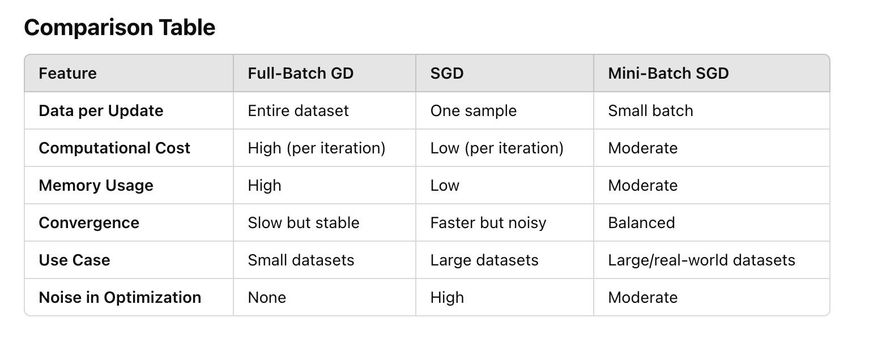
Logistic regression and conditional probabilities
Logistic regression is a classification model that is very easy to implement and performs very well on linearly separable classes. It is one of the most widely used algorithms for classification in industry. Similar to the perceptron and Adaline, the logistic regression model in this chapter is also a linear model for binary classification.
To explain the main mechanics behind logistic regression as a probabilistic model for binary classification, let’s first introduce the odds: the odds in favor of a particular event. The odds can be written as p/p-1, where p stands for the probability of the positive event. The term “positive event” does not necessarily mean “good,” but refers to the event that we want to predict, for example, the probability that a patient has a certain disease given certain symptoms; we can think of the positive event as class label y = 1 and the symptoms as features x. Hence, for brevity, we can define the probability p as p := p(y = 1|x), the conditional probability that a particular example belongs to a certain class 1 given its features, x.
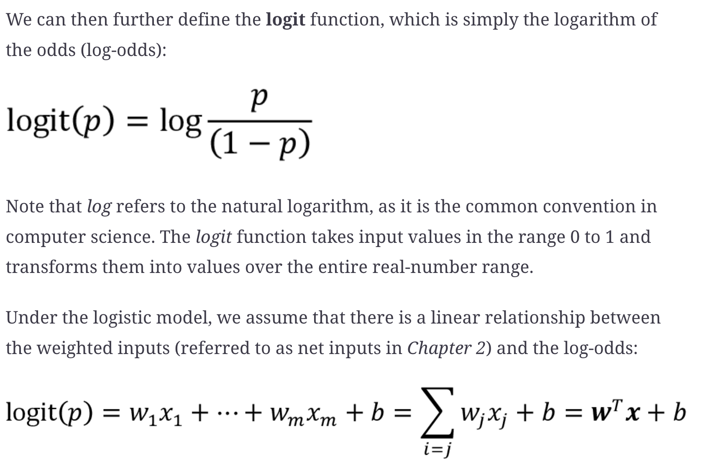
While the preceding describes an assumption we make about the linear relationship between the log-odds and the net inputs, what we are actually interested in is the probability p, the class-membership probability of an example given its features. While the logit function maps the probability to a real-number range, we can consider the inverse of this function to map the real-number range back to a [0, 1] range for the probability p.
This inverse of the logit function is typically called the logistic sigmoid function, which is sometimes simply abbreviated to sigmoid function due to its characteristic S-shape:
\sigma(z)=\frac{1}{1+e^{-z}}
Here, z is the net input, the linear combination of weights, and the inputs (that is, the features associated with the training examples):
z = wTx + b
To build some understanding of the logistic regression model, we can relate it to Adaline. In Adaline, we used the identity function, \sigma(z) = z, as the activation function. In logistic regression, this activation function simply becomes the sigmoid function that we defined earlier.
The difference between Adaline and logistic regression is illustrated in the following figure, where the only difference is the activation function.
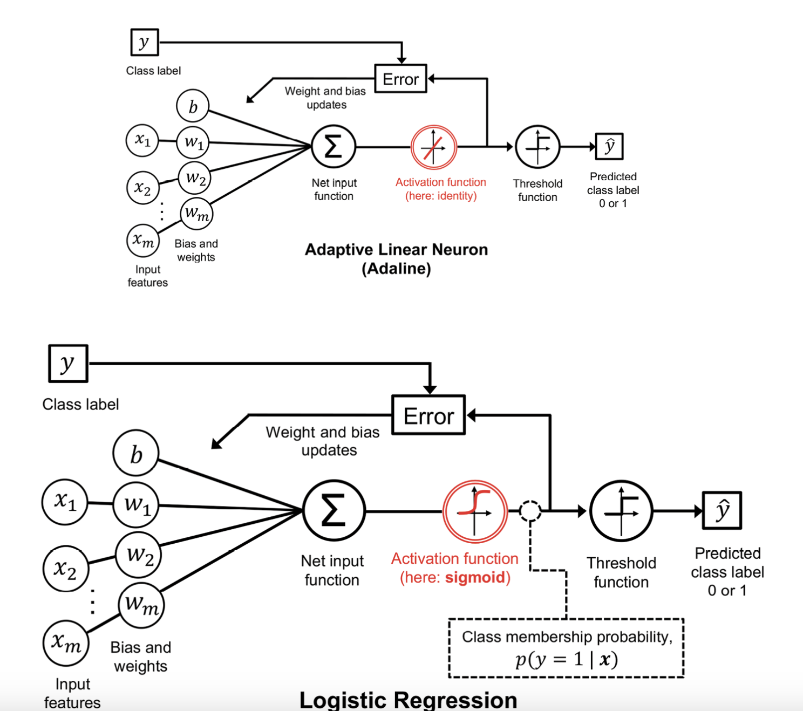
The output of the sigmoid function is then interpreted as the probability of a particular example belonging to class 1, \sigma(z)=p(y=1 \mid \boldsymbol{x} ; \boldsymbol{w}, b) , given its features, x, and parameterized by the weights and bias, w and b. For example, if we compute for a particular flower example 0.8, it means that the chance that this example is an Iris-versicolor flower is 80 percent.
The predicted probability can then simply be converted into a binary outcome via a threshold function:
\hat{y}= \begin{cases}1 & \text { if } \sigma(z) \geq 0.5 \ 0 & \text { otherwise }\end{cases}
there are many applications where we are not only interested in the predicted class labels, but where the estimation of the class-membership probability is particularly useful (the output of the sigmoid function prior to applying the threshold function).
\mathcal{L}(\boldsymbol{w}, b \mid \boldsymbol{x})=p(y \mid \boldsymbol{x} ; \boldsymbol{w}, b)=\prod_{i=1}^n p\left(y^{(i)} \mid \boldsymbol{x}^{(i)} ; \boldsymbol{w}, b\right)=\prod_{i=1}^n\left(\sigma\left(z^{(i)}\right)\right)^{y^{(i)}}\left(1-\sigma\left(z^{(i)}\right)\right)^{1-\boldsymbol{y}^{(i)}}
In practice, it is easier to maximize the (natural) log of this equation, which is called the log-likelihood function:
l(\boldsymbol{w}, b \mid \boldsymbol{x})=\log \mathcal{L}(\boldsymbol{w}, b \mid \boldsymbol{x})=\sum_{i=1}\left[y^{(i)} \log \left(\sigma\left(z^{(i)}\right)\right)+\left(1-y^{(i)}\right) \log \left(1-\sigma\left(z^{(i)}\right)\right)\right]
Firstly, applying the log function reduces the potential for numerical underflow, which can occur if the likelihoods are very small. Secondly, we can convert the product of factors into a summation of factors, which makes it easier to obtain the derivative of this function via the addition trick.
Now, use an optimization algorithm such as gradient ascent to maximize this log-likelihood function. (Gradient ascent works exactly the same way as gradient descent, except that gradient ascent maximizes a function instead of minimizing it)
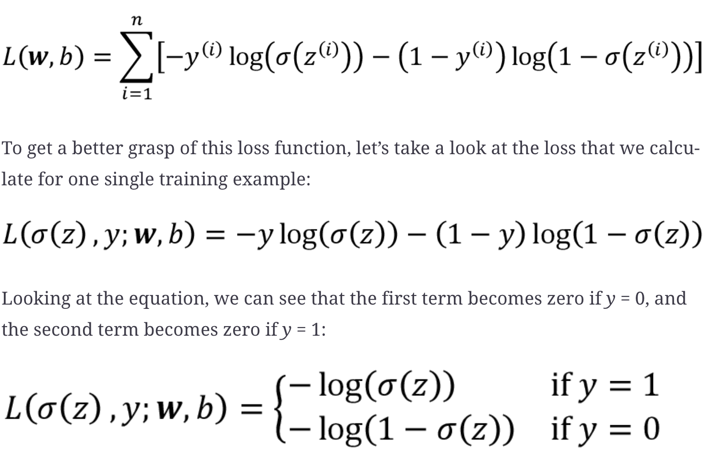
Tackling overfitting via regularization
Overfitting is a common problem in machine learning, where a model performs well on training data but does not generalize well to unseen data (test data). If a model suffers from overfitting, we also say that the model has a high variance, which can be caused by having too many parameters, leading to a model that is too complex given the underlying data. Similarly, our model can also suffer from underfitting (high bias), which means that our model is not complex enough to capture the pattern in the training data well and therefore also suffers from low performance on unseen data.
One way of finding a good bias-variance tradeoff is to tune the complexity of the model via regularization. Regularization is a very useful method for handling collinearity (high correlation among features), filtering out noise from data, and eventually preventing overfitting.
The concept behind regularization is to introduce additional information to penalize extreme parameter (weight) values. The most common form of regularization is so-called L2 regularization (sometimes also called L2 shrinkage or weight decay), which can be written as follows:
\frac{\lambda}{2 n}\|\boldsymbol{w}\|^2=\frac{\lambda}{2 n} \sum_{j=1}^m w_j^2
where \lambda is the regularization parameter
Regularization is another reason why feature scaling such as standardization is important. For regularization to work properly, we need to ensure that all our features are on comparable scales.
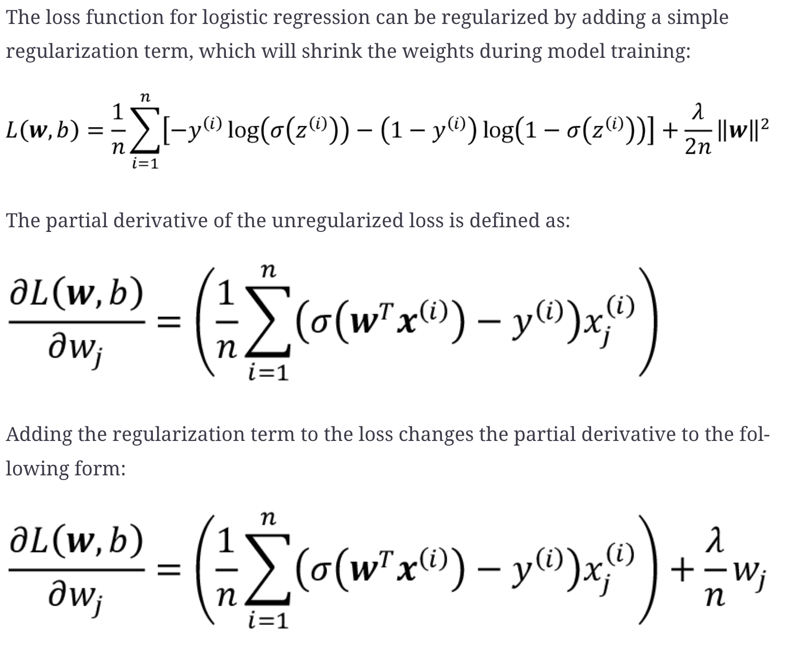
Via the regularization parameter, lambda, we can then control how closely we fit the training data, while keeping the weights small. By increasing the value of lambda, we increase the regularization strength.
The parameter, C, that is implemented for the LogisticRegression class in scikit-learn comes from a convention in support vector machines, which will be the topic of the next section. The term C is inversely proportional to the regularization parameter, lambda. Consequently, decreasing the value of the inverse regularization parameter, C, means that we are increasing the regularization strength.
Increasing the regularization strength can reduce overfitting, so we might ask why we don’t strongly regularize all models by default. The reason is that we have to be careful when adjusting the regularization strength. For instance, if the regularization strength is too high and the weights coefficients approach zero, the model can perform very poorly due to underfitting
Advantages, Limitations, Extensions
Advantages: Simple and Interpretable: Easy to understand and implement. Probabilistic Output: Provides probabilities, not just class labels. Efficient: Works well for small to medium-sized datasets. Feature Importance: Coefficients (𝜃) can indicate the importance of features.
Limitations: Linearity Assumption: Assumes a linear relationship between features and the log-odds. Sensitive to Outliers: Can be influenced by extreme data points. Limited Complexity: Struggles with non-linear relationships unless features are transformed.
Extensions: Multinomial Logistic Regression: Used for multiclass problems, with Softmax replacing the sigmoid function. Regularized Logistic Regression: Adds penalty terms like L1 (Lasso) or L2 (Ridge) to the cost function to prevent overfitting.
Maximum margin classification with support vector machines
Using the perceptron algorithm, we minimized misclassification errors. However, in SVMs, our optimization objective is to maximize the margin. The margin is defined as the distance between the separating hyperplane (decision boundary) and the training examples that are closest to this hyperplane, which are the so-called support vectors.
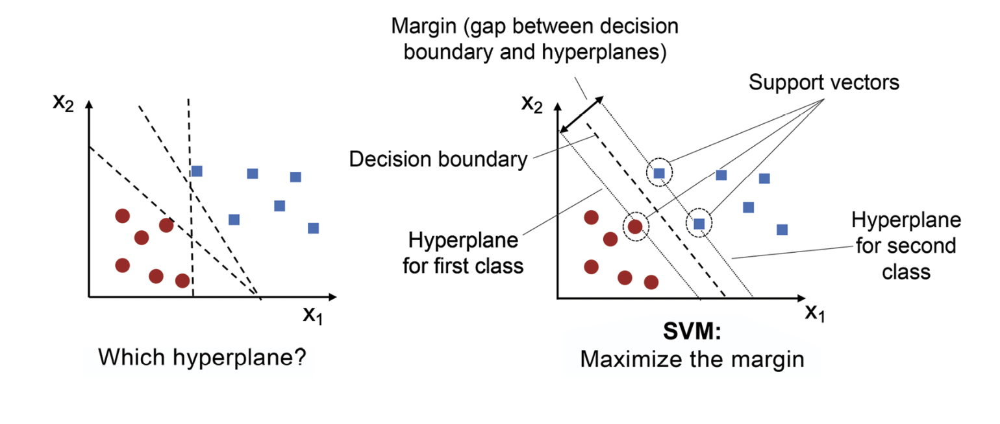
Maximum margin intuition
The rationale behind having decision boundaries with large margins is that they tend to have a lower generalization error, whereas models with small margins are more prone to overfitting
Dealing with a nonlinearly separable case using slack variables
The motivation for introducing the slack variable was that the linear constraints in the SVM optimization objective need to be relaxed for nonlinearly separable data to allow the convergence of the optimization in the presence of misclassifications, under appropriate loss penalization.
The use of the slack variable, in turn, introduces the variable, which is commonly referred to as C in SVM contexts. We can consider C as a hyperparameter for controlling the penalty for misclassification. Large values of C correspond to large error penalties, whereas we are less strict about misclassification errors if we choose smaller values for C. We can then use the C parameter to control the width of the margin and therefore tune the bias-variance tradeoff.
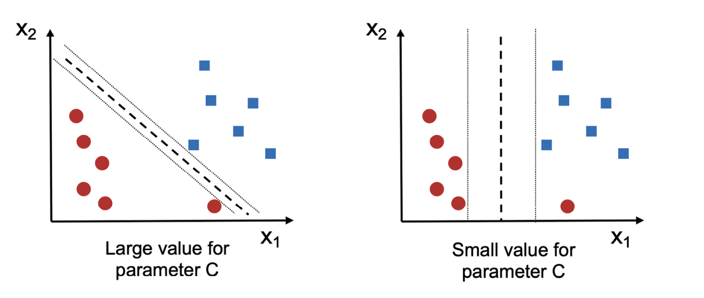 This concept is related to regularization, which we discussed in the previous section in the context of regularized regression, where decreasing the value of C increases the bias (underfitting) and lowers the variance (overfitting) of the model.
Solving nonlinear problems using a kernel SVM
Another reason why SVMs enjoy high popularity among machine learning practitioners is that they can be easily kernelized to solve nonlinear classification problems, example, an XOR dataset. The basic idea behind kernel methods for dealing with such linearly inseparable data is to create nonlinear combinations of the original features to project them onto a higher-dimensional space via a mapping function,\phi, where the data becomes linearly separable. This allows us to separate the two classes shown in the plot via a linear hyperplane that becomes a nonlinear decision boundary if we project it back onto the original feature space, as illustrated with the following concentric circle dataset.
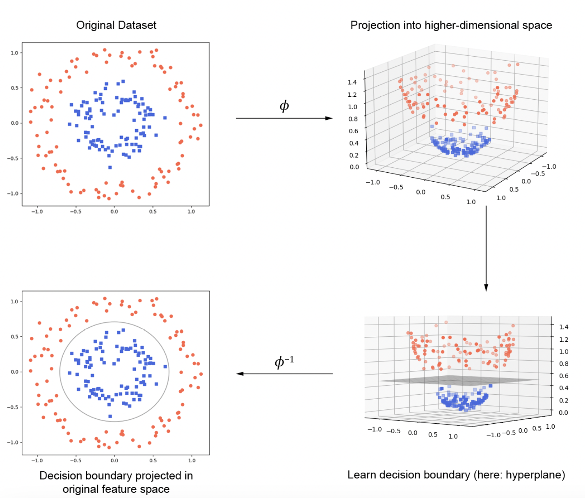
Using the kernel trick to find separating hyperplanes in a high-dimensional space
To solve a nonlinear problem using an SVM, we would transform the training data into a higher-dimensional feature space via a mapping function, , and train a linear SVM model to classify the data in this new feature space. Then, we could use the same mapping function, , to transform new, unseen data to classify it using the linear SVM model.
However, one problem with this mapping approach is that the construction of the new features is computationally very expensive, especially if we are dealing with high-dimensional data. This is where the so-called kernel trick comes into play.
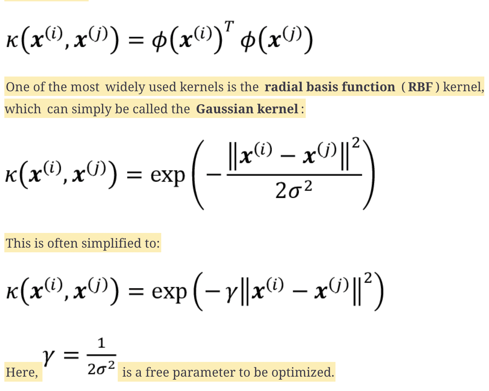
Roughly speaking, the term “kernel” can be interpreted as a similarity function between a pair of examples. The minus sign inverts the distance measure into a similarity score, and, due to the exponential term, the resulting similarity score will fall into a range between 1 (for exactly similar examples) and 0 (for very dissimilar examples).
Advantages, Limitations, Hyperparameter Tuning
Advantages: Effective in High Dimensions: Works well when the number of features is greater than the number of samples. Versatile: Can handle linear and non-linear data through the kernel trick. Robust to Overfitting: Especially for small datasets, as it focuses only on support vectors.
Disadvantages: Computationally Expensive: Training time scales poorly with large datasets O(n^2) Sensitive to Hyperparameters: Requires careful tuning of 𝐶 kernel parameters, etc. Not Probabilistic: SVM doesn’t provide direct probabilities but can use Platt scaling for approximate probabilities.
Hyperparameter Tuning: 𝐶: Controls the trade-off between margin size and misclassification. Kernel Type: Choose based on the data distribution (linear, RBF, polynomial, etc.). 𝛾: For RBF/poly kernels, controls how far the influence of a single training example reaches. Small 𝛾 results in a smoother decision boundary, while large 𝛾 fits closely to the data.
Decision tree learning
Decision tree classifiers are attractive models if we care about interpretability. As the name “decision tree” suggests, we can think of this model as breaking down our data by making a decision based on asking a series of questions.
Using the decision algorithm, we start at the tree root and split the data on the feature that results in the largest information gain (IG), which will be explained in more detail in the following section. In an iterative process, we can then repeat this splitting procedure at each child node until the leaves are pure. This means that the training examples at each node all belong to the same class. In practice, this can result in a very deep tree with many nodes, which can easily lead to overfitting. Thus, we typically want to prune the tree by setting a limit for the maximum depth of the tree.
Maximizing Information Gain – getting the most bang for your buck
The information gain is simply the difference between the impurity of the parent node and the sum of the child node impurities—the lower the impurities of the child nodes, the larger the information gain.
I G\left(D_p, f\right)=I\left(D_p\right)-\frac{N_{\text {left }}}{N_p} I\left(D_{\text {left }}\right)-\frac{N_{\text {right }}}{N_p} I\left(D_{\text {right }}\right)
The three impurity measures or splitting criteria that are commonly used in binary decision trees are Gini impurity (IG), entropy (IH), and the classification error (IE). However, in practice, both the Gini impurity and entropy typically yield very similar results, and it is often not worth spending much time on evaluating trees using different impurity criteria rather than experimenting with different pruning cut-offs.
Decision trees can build complex decision boundaries by dividing the feature space into rectangles. However, we have to be careful since the deeper the decision tree, the more complex the decision boundary becomes, which can easily result in overfitting.
Advantages, Limitations, Regularization Techniques
Advantages:
- Easy to Interpret: Provides a clear flowchart-like structure.
- Handles Non-Linear Data: Captures complex patterns in data.
- Feature Importance: Naturally identifies the most important features based on splits.
- No Need for Scaling: Works with raw data, no need for normalization or standardization.
Disadvantages:
- Overfitting: A fully grown tree may memorize the training data, leading to poor generalization.
- Instability: Small changes in the data can lead to a completely different tree.
- Bias: Can be biased towards features with more levels (e.g., categorical features with many unique values).
Regularization Techniques:
- Maximum Depth: Limits the depth of the tree to reduce complexity.
- Minimum Samples Split: Minimum number of samples required to split a node.
- Minimum Samples Leaf: Minimum number of samples required at a leaf node.
- Max Features: Limits the number of features considered for a split.
- Pruning: Remove branches with low contribution to the overall accuracy (post-hoc or during training).
Combining multiple decision trees via random forests
Decision tree-based random forest algorithm, which is known for its good scalability and ease of use. A random forest can be considered as an ensemble of decision trees. The idea behind a random forest is to average multiple (deep) decision trees that individually suffer from high variance to build a more robust model that has a better generalization performance and is less susceptible to overfitting. The random forest algorithm can be summarized in four simple steps:
- Draw a random bootstrap sample of size n (randomly choose n examples from the training dataset with replacement).
- Grow a decision tree from the bootstrap sample. At each node:
- Randomly select d features without replacement.
- Split the node using the feature that provides the best split according to the objective function, for instance, maximizing the information gain.
- Repeat steps 1-2 k times.
- Aggregate the prediction by each tree to assign the class label by majority vote.
We should note one slight modification in step 2 when we are training the individual decision trees: instead of evaluating all features to determine the best split at each node, we only consider a random subset of those.
Although random forests don’t offer the same level of interpretability as decision trees, a big advantage of random forests is that we don’t have to worry so much about choosing good hyperparameter values. We typically don’t need to prune the random forest since the ensemble model is quite robust to noise from averaging the predictions among the individual decision trees.
The only parameter that we need to care about in practice is the number of trees, k, (step 3) that we choose for the random forest. Typically, the larger the number of trees, the better the performance of the random forest classifier at the expense of an increased computational cost.
The size of the bootstrap sample is chosen to be equal to the number of training examples in the original training dataset, which usually provides a good bias-variance tradeoff. For the number of features, d, at each split, we want to choose a value that is smaller than the total number of features in the training dataset. A reasonable default that is used in scikit-learn and other implementations is d = sqrt(m), where m is the number of features in the training dataset.
K-nearest neighbors – a lazy learning algorithm
KNN is a typical example of a lazy learner. It is called “lazy” not because of its apparent simplicity, but because it doesn’t learn a discriminative function from the training data but memorizes the training dataset instead.